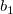
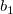

Wenn Ihre Daten eine Faltung von Gauss- und Exponential-Funktionen darstellt, können Sie einfach die Standardanpassungsfunktion GaussMod in der Kategorie Peakfunktionen verwenden, um Ihre Daten direkt anzupassen.
In diesem Tutorial wird Ihnen gezeigt, wie Sie eine Faltung von zwei Funktionen definieren und eine Anpassung der Daten mit nicht äquidistant verteilten X-Werten mit Hilfe dieser Fitfunktion durchführen.
|
Wenn Ihre Daten eine Faltung von Gauss- und Exponential-Funktionen darstellt, können Sie einfach die Standardanpassungsfunktion GaussMod in der Kategorie Peakfunktionen verwenden, um Ihre Daten direkt anzupassen. |
Origin-Version mind. erforderlich: Origin 9.0 SR0
Dieses Tutorial zeigt Ihnen, wie Sie:
Die Anpassungsfunktion ist eine Faltung von zwei Funktionen. Sie kann wie folgt berechnet werden:
^2}{w_2^2}}+(f\;*\;g)(x)")
wobei =\frac{s}{\pi}\cdot\frac{\tau_Lx_0^2(x_L^2-x_0^2)}{(x-x_{c1})\tau_L((x-x_{c1})^2-x_L^2)^2+((x-x_{c1})^2-x_0^2)^2}") ,
,
 , , , s,
, , , s,  ,  und
,  und  sind Anpassungsparameter.
sind Anpassungsparameter.  ,
,  ,
,  ,
,  und sind Konstanten in der Anpassungsfunktion.
und sind Konstanten in der Anpassungsfunktion.
Die Anpassungsfunktion kann mit Hilfe des Hilfsmittels Fitfunktionen erstellen definiert werden.
x0 = 3,1 xL = 6,3 tL = 0,4 s = 0,14 y0 = 1,95e-3 b1 = 2,28e-5 b2 = 0,2
Klicken Sie auf die Registerkarte Konstanten und legen Sie die Konstanten, wie folgt, fest:
w1 = 1,98005 xc1 = -0,30372 w2 = 5,76967 xc2 = 3,57111 A2 = 9,47765e-2
Klicken Sie auf die Schaltfläche  rechts vom Bearbeitungsfeld des Funktionskörpers und definieren Sie die Anpassungsfunktion im Code Builder mit:
rechts vom Bearbeitungsfeld des Funktionskörpers und definieren Sie die Anpassungsfunktion im Code Builder mit:
Headerdateien einschließen
#include <ONLSF.H> #include <fft_utils.h>
Funktionskörper definieren
NLFitContext *pCtxt = Project.GetNLFitContext(); if ( pCtxt ) { // Vector for the output in each iteration. static vector vX, vY; static int nSize; BOOL bIsNewParamValues = pCtxt->IsNewParamValues(); // If parameters were updated, we will recalculate the convolution result. if ( bIsNewParamValues ) { //Sampling Interval double dx = 0.05; vX.Data(-16.0, 16.0, dx); nSize = vX.GetSize(); vector vF, vG, vTerm1, vTerm2, vDenominator, vBase, vAddBase; double Numerator = tL * x0^2 * (xL^2 - x0^2); vTerm1 = ( (vX - xc1) * tL * ( (vX - xc1)^2 - xL^2 ) )^2; vTerm2 = ( (vX - xc1)^2 - x0^2 )^2; vDenominator = vTerm1 + vTerm2; //Function f(x) vF = (s/pi) * Numerator / vDenominator; //Function g(x) vG = 1/(w1*sqrt(pi/2))*exp(-2*vX^2/w1^2); //Pad zeroes at the end of f and g before convolution vector vA(2*nSize-1), vB(2*nSize-1); vA.SetSubVector( vF ); vB.SetSubVector( vG ); //Perform circular convolution int iRet = fft_fft_convolution(2*nSize-1, vA, vB); //Truncate the beginning and the end vY.SetSize(nSize); vA.GetSubVector( vY, floor(nSize/2), nSize + floor(nSize/2)-1 ); //Baseline vBase = (b1*vX + y0); vAddBase = b2 * A2/(w2*sqrt(pi/2))*exp( -2*(vX-xc2)^2/w2^2 ); //Fitted Y vY = dx*vY + vBase + vAddBase; } //Interpolate y from x for the fitting data on the convolution result. ocmath_interpolate( &x, &y, 1, vX, vY, nSize ); }
Klicken Sie auf die Schaltfläche Kompilieren, um den Funktionskörper zu kompilieren. Klicken Sie dann auf die Schaltfläche Zurück zum NSLF.
Klicken Sie auf die Schaltfläche Auswerten. Es wird y = 0,02165 bei x =1 angezeigt. Dies weist darauf hin, dass die definierte Fitfunktion korrekt ist. Klicken Sie auf Weiter.
0 < x0 < 7 0 < xL < 10 0 < tL < 1 0 <= s <= 5 0 < b2 <= 3
Klicken Sie auf Fertigstellen.
| Hinweis: Um die angepassten Parameter zu überwachen, wurde die Klasse NLFitContext zum Definieren von Anpassungsfunktionen eingeführt, um einige Schlüsselinformationen innerhalb des Fitters zu erreichen. |
Die angepasste Kurve sollte folgendermaßen aussehen:

Die angepassten Parameter sind im Folgenden zu sehen:
| Parameter | Wert | Standardfehler |
|---|---|---|
| x0 | 3,1424 | 0,07318 |
| xL | 6,1297 | 0,1193 |
| tL | 0,42795 | 0,02972 |
| s | 0,14796 | 0,00423 |
| y0 | 0,00216 | 1,76145E-4 |
| b1 | 4,90363E-5 | 1,61195E-5 |
| b2 | 0,07913 | 0,02855 |
Beachten Sie, dass Sie einen kleineren Wert für dx im Fitfunktionskörper einsetzen können. Dadurch wird das Ergebnis vielleicht genauer, allerdings benötigt die Anpassung möglicherweise mehr Zeit.